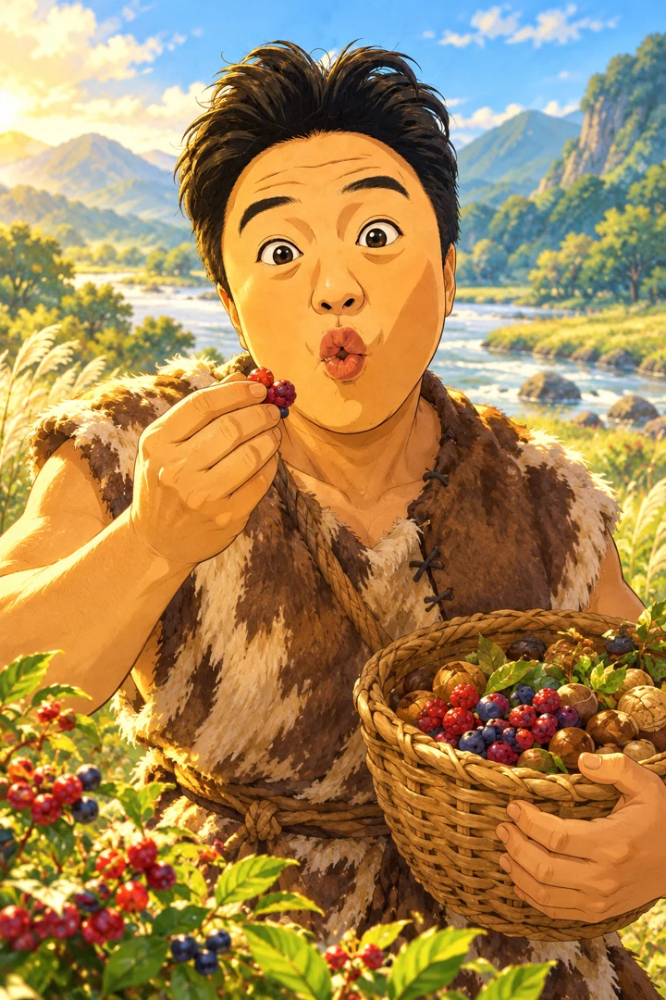

구석기에서 대한민국까지 · 9개 시대
강과 산을 건너,
우리 역사의 첫 장으로
문제를 풀어 땅을 넓히고, 미션과 유물 카드를 모으며 탐험대를 다음 시대로 이끌어 보세요.
이 시연판에 대해

- 경험치
- 식량
- 인구
- 국력
- ★ 우리 영토
- 중립
- ⚑ 시연용 경쟁 부족(컴퓨터)
- 🔒 다음 시대에 열림
- 유적(정보용 · 점령과 무관)
- 고조선 문화 범위 참고 · 확정 국경 아님
로컬 1인 시연판 · 온라인 경쟁 미구현
구석기에서 대한민국까지 · 9개 시대
문제를 풀어 땅을 넓히고, 미션과 유물 카드를 모으며 탐험대를 다음 시대로 이끌어 보세요.
